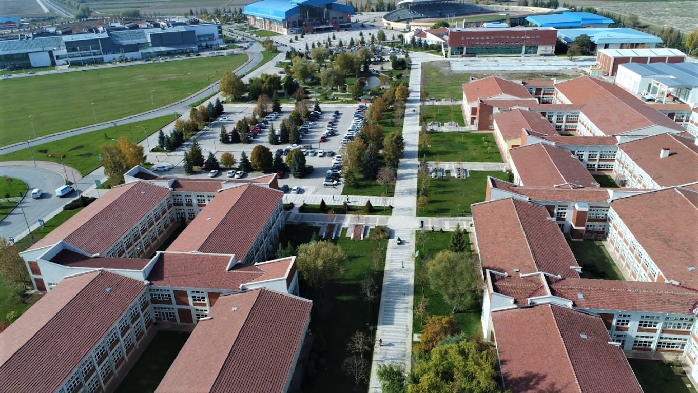

About Us
The Eskişehir Technical University, established by Law No. 7141 published in the Official News dated
May 18, 2018, is located in the center of Eskişehir, a city known for its science, culture, and
vibrant
youth. It consists of 5 faculties, 2 vocational schools, 1 college, 3 institutes, and 6 research and
application centers spread across 3 campuses. With a strong infrastructure for conducting educational,
instructional, and research activities, the university strives to prepare its students as the most
competent and competitive individuals for the future. With a proficient faculty dedicated to staying
updated with advancements in their fields and sharing their knowledge with students, the university
creates dynamic and creative learning environments. Additionally, our Aviation and Space Sciences
Faculty operates the international Hasan Polatkan Airport located at the 2 September Campus, where
various international flights are conducted by different airlines on different days of the week.
Program Information
Associate Degree:
17
Undergraduate:
30
Master's:
179
Doctorate:
79
Student Information
Associate Degree Students:
3238
Undergraduate Students:
9203
Master's Students:
2000
Doctorate Students:
641
Teaching Information
Classrooms:
650+
Teaching Program:
130+
Semester Courses:
4000+
Our Policies
Quality Policy
- To ensure the sustainable performance of our university, manage processes in line with strategies considering stakeholder expectations and requirements, and continuously improve.
- Develop a culture of quality focused on continuous learning, improvement, and innovation.
- Based on the standards of the Higher Education Quality Board, establish specific standards for our university aligned with our mission and objectives using the new EFQM approach.
- Establish and implement an internal quality assurance system that ensures the closure of PDCA cycles (Plan-Do-Check-Act) covering all activities of quality assurance, including education, research, community service, internationalization, and governance.
- Establish an integrated quality assurance organizational structure covering internal/external evaluation and accreditation processes for all areas of activity at the university beyond the framework defined by national legislation.
- As a university focused on technical fields, conduct education, teaching, and research activities interactively.
- Ensure compliance of all associate, undergraduate, and graduate programs within our internal quality assurance system with national and/or international accreditation criteria.
- Create and maintain a student-centered and competency-based education ecosystem by enhancing our capabilities in learning, teaching, and assessment dimensions to sustainably support students and graduates.
- Support face-to-face education with distance learning methods and information technologies.
- Balance the ratio of undergraduate/graduate students by increasing the number of graduate programs and students.
- As a research-focused university, conduct education, teaching, and research activities interactively in all processes.
- Prioritize the research competencies of faculty members in appointment-promotion and performance evaluation processes.
- Develop and implement an interactive, output- and impact-focused research management ecosystem that encompasses all components of the research process.
- Conduct research focusing on business and international collaboration to produce valuable research outputs.
- Conduct research focusing on identified priority areas and sustainability.
- Ensure that the research culture is embraced by academic staff as a lifestyle.
- Manage the university's knowledge and research capabilities to support entrepreneurship and societal development.
- Utilize the university's resources and capabilities to introduce science to society, enhance awareness, and foster appreciation.
- Adopt a management style that fosters a culture of co-management, considers performance, and adheres to agile governance principles.
- Manage potential risks arising from rapidly changing, uncertain, and complex environments with our institutional capacity and corporate agility.
- Develop a corporate organizational structure that meets the requirements of institutionalization, with all roles, authorities, and responsibilities clearly defined, focused on horizontal structuring, open to development, and based on solid foundations, promoting flexibility and innovation.
- Embrace a transparent, accountable, and participatory management approach within the framework of universal ethical values; inform the public about all university activities openly, accurately, timely, and accessibly.
- Motivate and continuously develop employees, reward success, strengthen representation and sense of belonging, be accessible, and improve effective communication mechanisms.
- Provide a safe and healthy living environment for students, employees, and all stakeholders, establish sustainable eco-campus infrastructure, and create an integrated disaster and emergency management system on campuses.
- Increase self-generated revenues to ensure the sustainability of core activities.
- Establish an organizational structure and implement incentive mechanisms for conducting education, teaching, research, and community service activities through international collaborations.
- Increase the number of double and joint degree programs within the framework of the international approach of the curriculum.
- Encourage participation in international networks and organizations to expand the international cooperation network.
- Conduct studies to raise awareness about gender equality, carry out planned activities for the adoption of this culture by all stakeholders, and share its efforts with the community to develop awareness.
- Commit to conducting gender equality improvement efforts under the leadership of its top management.
- Commit to the guiding principle of gender equality and inclusivity in our fundamental activities defined as education-teaching, research-development, and community service, as well as in all our managerial processes.
- Commit to providing an inclusive, respectful, and developmental working environment for all female and male employees.
- Commit to providing an educational and research environment based on inclusivity and gender equality for all students.
- Does not discriminate between female and male employees in human resources processes, adopts the principles of equal pay for equal work and transparency, and commits to supporting all employees in their career development.
- Supports overcoming the glass ceiling for women and supports women's leadership in management.
- Encourages applications from all stakeholders in areas where women are not adequately represented. Provides counseling/mentoring support for this purpose.
- Supports employees and students in achieving work-life balance and fulfilling their parenting responsibilities.
- Does not tolerate any form of violence, sexual harassment, assault, or bullying. Commits to investigating and intervening in any reported or observed physical, emotional, verbal, or non-verbal behavior towards any stakeholder. Establishes reporting/feedback mechanisms and ensures that the reporting party is not subjected to any discrimination and is protected.
- Uses language in all communication activities and all communication tools that strengthen equality and inclusivity, and makes efforts for this language to be adopted by all stakeholders. Provides basic awareness to all stakeholders by implementing education and development programs for this purpose.
- Collaborates with civil society organizations, universities, public and private sectors for the development of gender equality in society.
- Acknowledges that SKA (Sustainability and Sustainable Eco-Campus) guides our activities in education-teaching, research-development, community service, and all managerial processes.
- Commits to making all activities compatible with the principle of sustainability within the framework of SKA under the leadership of the top management and with a participatory approach.
- Commits to raising awareness within the scope of SKA, carrying out activities for the adoption of these purposes by all stakeholders, sharing its efforts with the community, and collaborating with universities, the public and private sectors, and relevant civil society organizations in this regard.
- Commits to providing a sustainable, inclusive, and gender equality-based working, education-teaching, and research environment for its academic and administrative staff, students, and stakeholders.
- Commits to guiding and supporting its academic and administrative staff, students, and stakeholders in the areas related to SKA in their academic and social development.
- Commits to encouraging the studies, guidance, and applications of its academic and administrative staff, students, and stakeholders in the fields related to SKA and providing counseling/mentoring support for this purpose.
- Commits to using a language compatible with SKA in all activities and all communication tools and making efforts for this language to be adopted by all stakeholders.